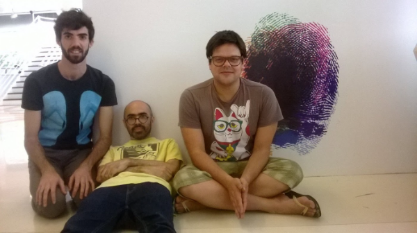
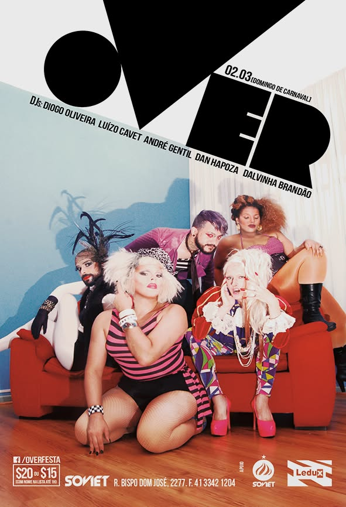

Processo de intercâmbio com o performer e compositor uruguaio Dani Umpi, que resultou em uma única apresentação, na Mostra Todos os Gêneros do Rumos Itaú Cultural. Em cena também: Eidglas Xavier.

Projeto de Princesa Ricardo Marinelli, com Elielson Pacheco e Erivelto Vianna. Intervenção sonora. São Paulo · Bienal Sesc de Dança / Conexão Dança, Sesc Santo Amaro · Bolonha, Itália.
Ocupação do Teatro Cacilda Becker, Rio de Janeiro, em parceria com o festival Yes, Nós Temos Burlesco!
Evento mensal de comédia experimental no espaço La Bamba, Curitiba, coproduzido com Vi Gabarda e Kysy Fischer. Edições especiais em São Paulo, Rio de Janeiro, Florianópolis e Berlim.
Natal Infernal e Troféu Cabeça de Chinchila, com a Selvática; OVER:, com o promoter Luizo Cavet; Crossdresserdiscodiva, com o Paradis Club, a Chinela no Camaleão Cultural, entre outras.
